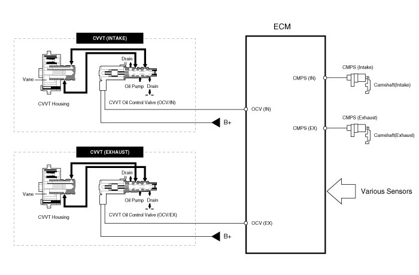
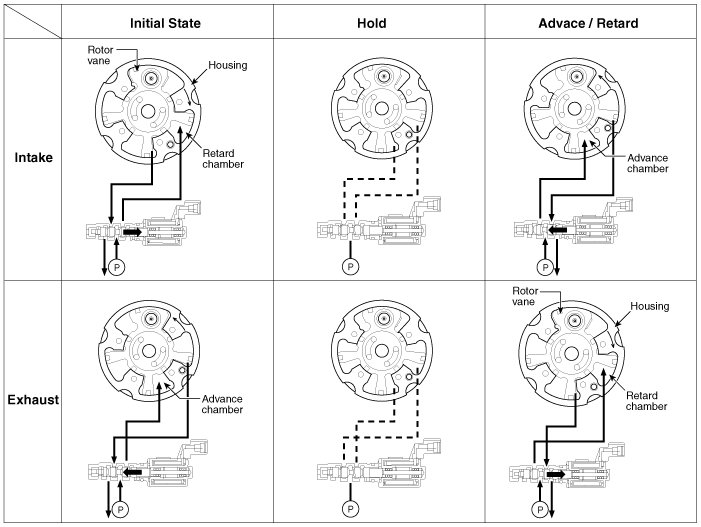
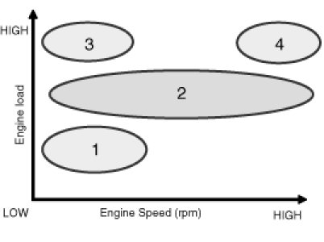
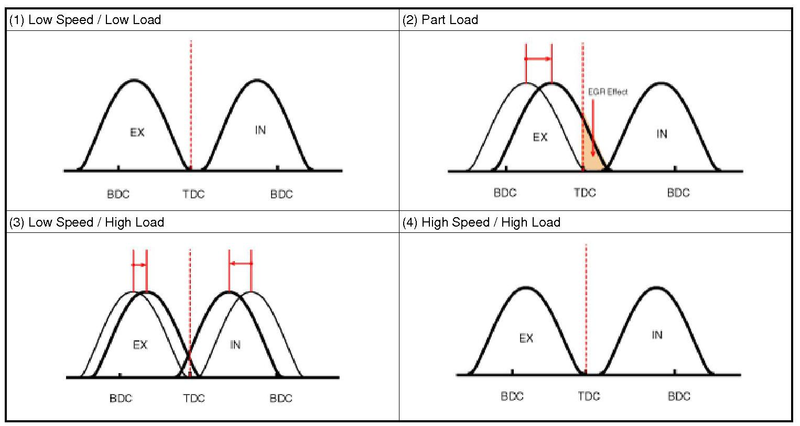
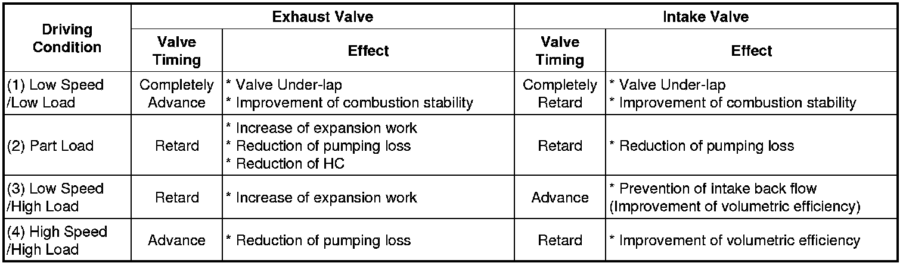

CVVT (Continuously Variable Valve Timing) System
Description
Continuous Variable Valve Timing (CVVT) system advances or retards the valve timing of the intake and exhaust valve in accordance with the ECM control signal which is calculated by the engine speed and load.
By controlling CVVT, the valve over-lap or under-lap occurs, which makes better fuel economy and reduces exhaust gases (NOx, HC) and improves engine performance through reduction of pumping loss, internal EGR effect, improvement of combustion stability, improvement of volumetric efficiency, and increase of expansion work.
This system consist of
- the CVVT Oil Control Valve (OCV) which regulates engine oil to and from the cam phaser in accordance with the ECM PWM (Pulse With Modulation) control signal,
- and the Cam Phaser which varies the cam phase by using the hydraulic force of the engine oil.
The engine oil getting out of the CVVT oil control valve varies the cam phase in the direction (Intake Advance/Exhaust Retard) or opposite direction (Intake Retard/Exhaust Advance) of the engine rotation by rotating the rotor connected with the camshaft inside the cam phaser.

Operation Principle
The CVVT has the mechanism rotating the rotor vane with hydraulic force generated by the engine oil supplied to the advance or retard chamber in accordance with the CVVT oil control valve control.

[CVVT System Mode]


